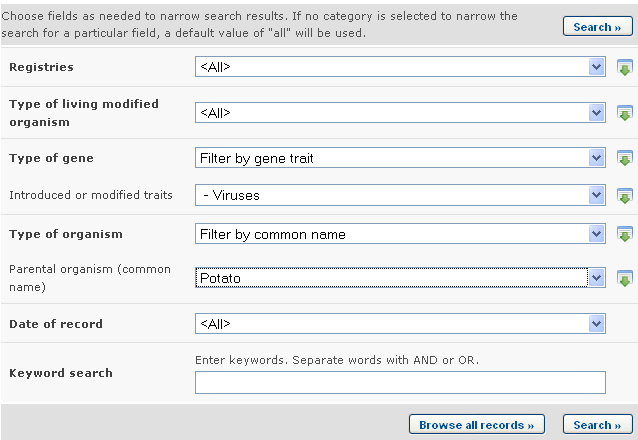
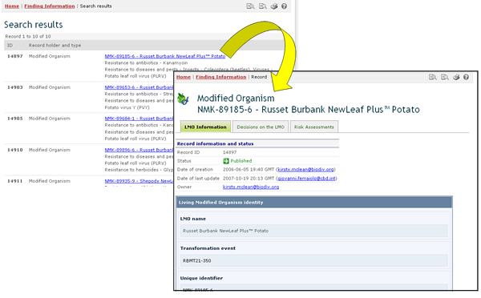

Ejemplo. Un usuario desea encontrar todas las modificaciones de papa que tengan como resultado una resistencia a virus. El usuario: (i) selecciona Filtrar por rasgo de gen en el cuadro Tipo de Gen y luego Virus en el cuadro de Rasgos Introducidos o modificados; y (ii) selecciona Filtrar por nombre común en el cuadro Tipo de Organismo y luego selecciona Patata, Papa en el cuadro Organismo Parental.
Al hacer clic en el botón Realizar la búsqueda se obtienen los resultados de la búsqueda presentados en una lista de registros. La información detallada de cada OVM puede obtenerse seleccionando el título de cada registro.


Esta imagen fue tomada en Febrero del 2010 con el único propósito de proveer un ejemplo sobre el uso del CIISB.